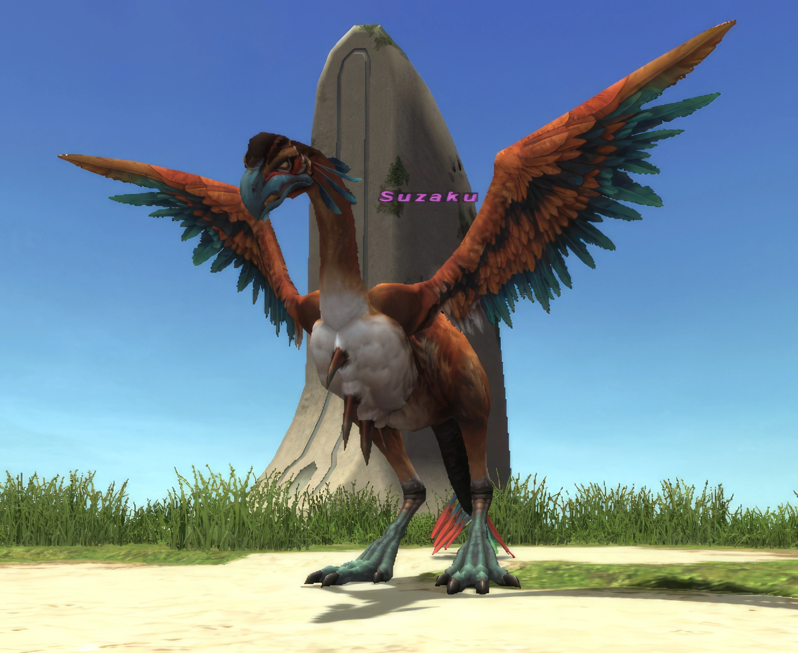

Level 75 reference · Zenith rules
|
Job: Red Mage Notorious Monster |
 Image source |


|
Zone |
Level |
Drops |
Steal |
Spawns |
Notes | ||||||
|
88-90 |
1 |
A, T(S)
| |||||||||
|
1 |
A, T(S)
| |||||||||
|
HP = Detects Low HP; M = Detects Magic; Sc = Follows by Scent; T(S) = True-sight; T(H) = True-hearing JA = Detects job abilities; WS = Detects weaponskills; Z(D) = Asleep in Daytime; Z(N) = Asleep at Nighttime | |||||||||||

 Image source Image sourceNotes A:
|
 Image source Image sourceNotes B:
|


Dialogue
Dialogue when appears
Suzaku: "I am Suzaku, Divine Guardian of the South. You shall die ten thousand deaths for disturbing my repose!"
Dialogue when defeated
Suzaku: "That I would bow my head to a mortal's might... You shall pay for this humiliation."
Adapted from Eden Wiki: Suzaku · Contributors and history · CC BY-SA 4.0. Revision 1968. Layout, links and optional background text adapted for Zenith.